Guide to your accommodation 宿泊施設へのご案内 前往住宿的指南 숙소 안내 Guide d’accès au logement Guía para llegar al alojamiento
Address 住所 地址 주소 Adresse Dirección
5-chōme-58-2 Hirai, Edogawa City, Tokyo 132-0035
〒132-0035 東京都江戸川区平井５丁目５８−２
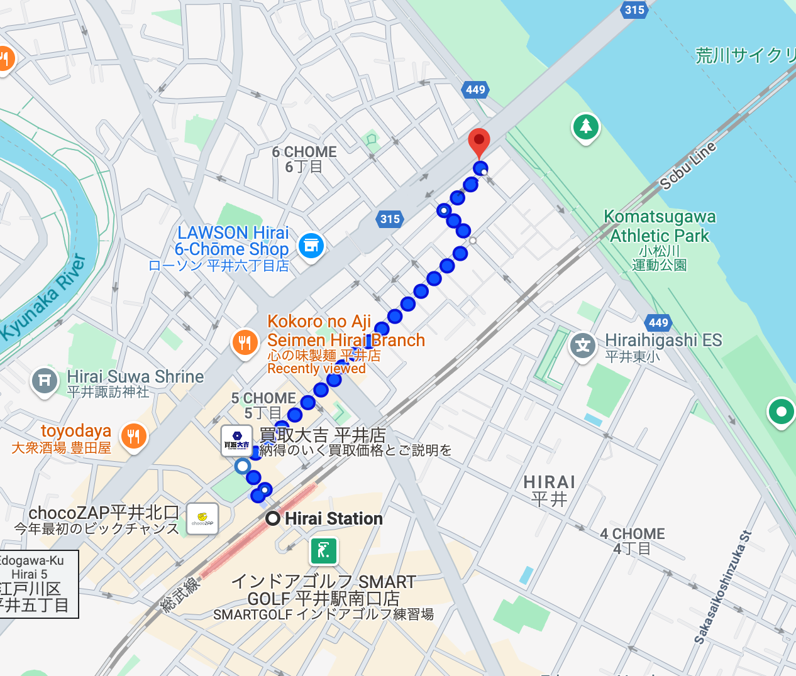
Nearest Station 最寄り駅 最近的车站 가장 가까운 역 Gare la plus proche Estación más cercana
Hirai Station (Sōbu Line) · 9 min walk
平井駅（総武線）徒歩9分
平井站（总武线）步行9分钟
히라이역(소부선) 도보 9분
Gare de Hirai (ligne Sōbu), 9 min à pied
Estación Hirai (línea Sōbu), 9 min a pie
From Hirai Station to your accommodation 平井駅から宿泊施設まで 从平井站到住宿 히라이역에서 숙소까지 De la gare de Hirai jusqu’au logement Desde la estación Hirai hasta el alojamiento
From Hirai Station to your accommodation
平井駅から宿泊施設まで
从平井站到住宿
히라이역에서 숙소까지
De la gare de Hirai jusqu’au logement
Desde la estación Hirai hasta el alojamiento
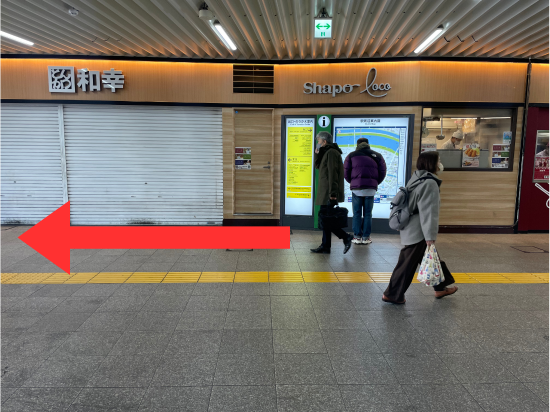
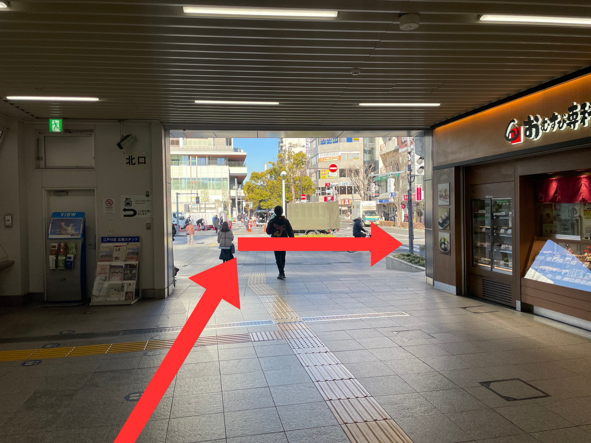
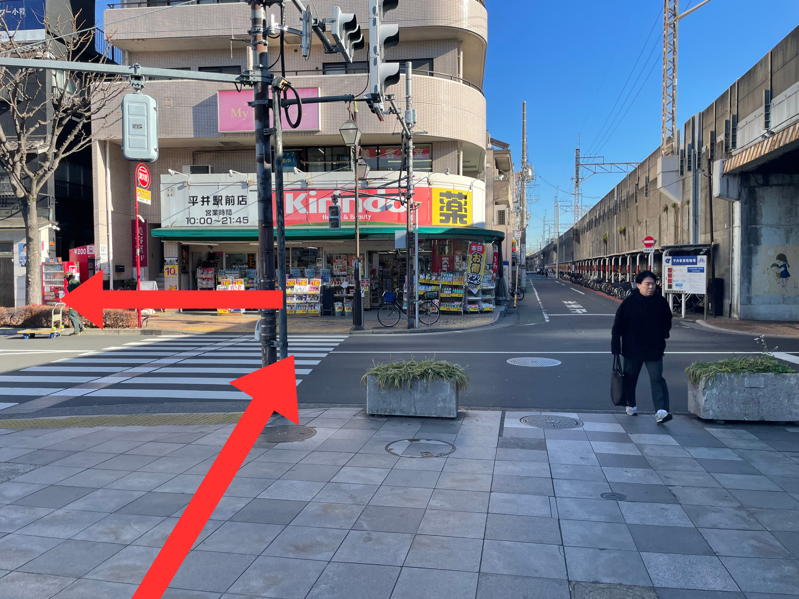
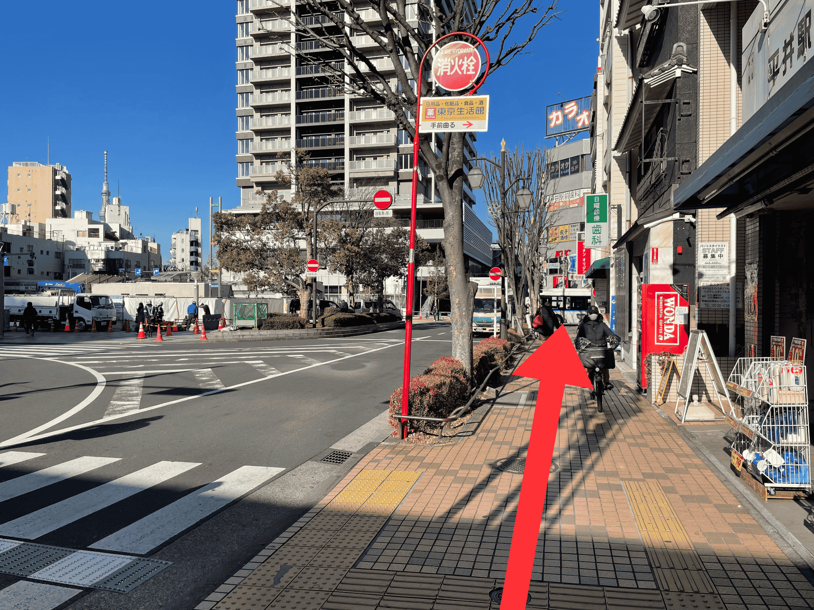
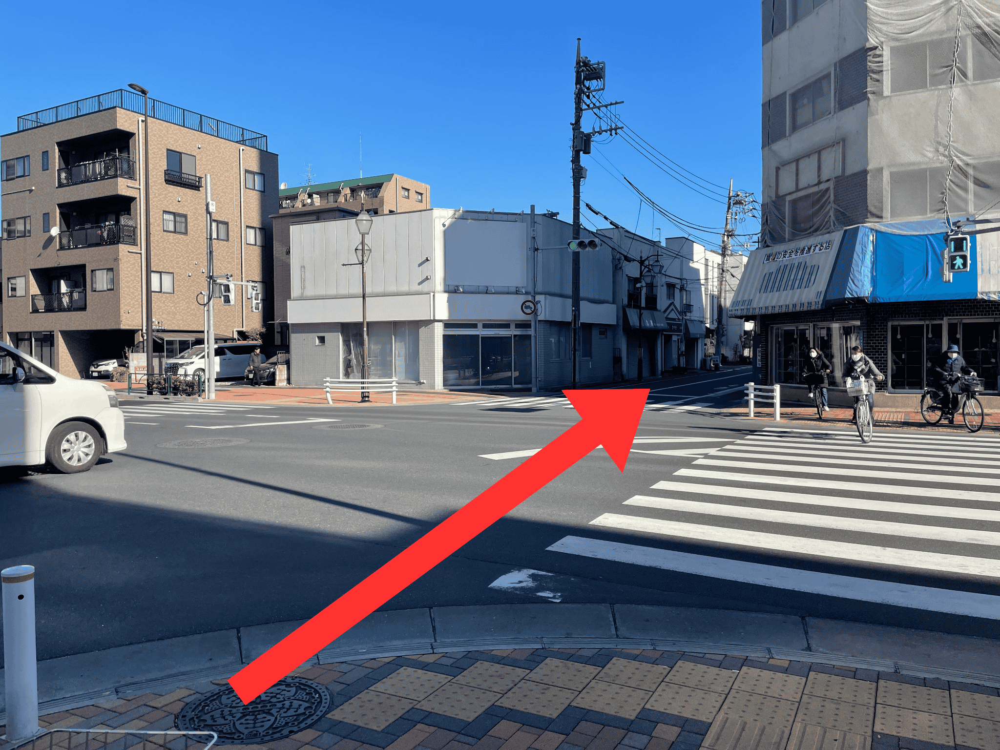
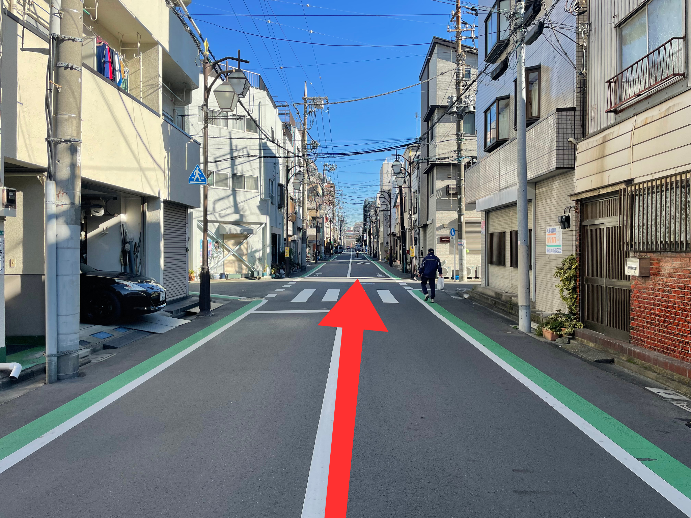
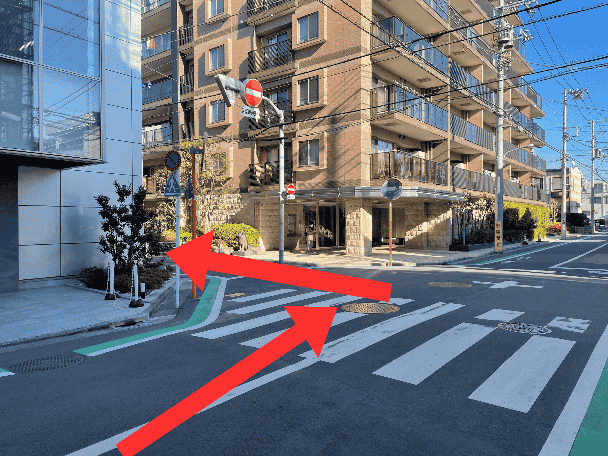
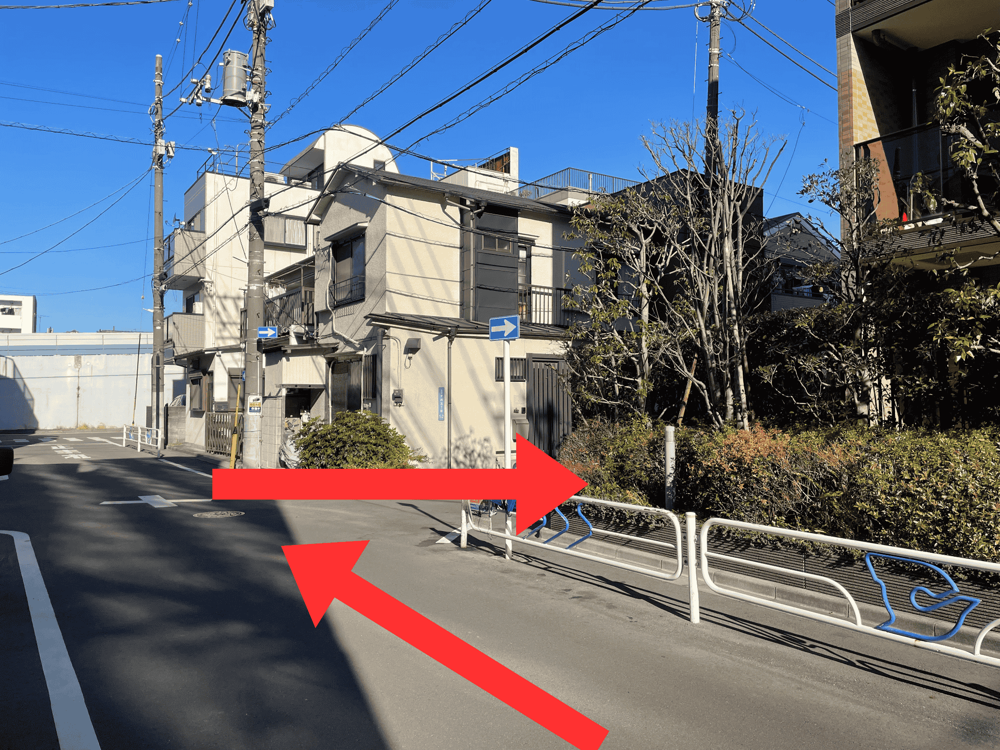
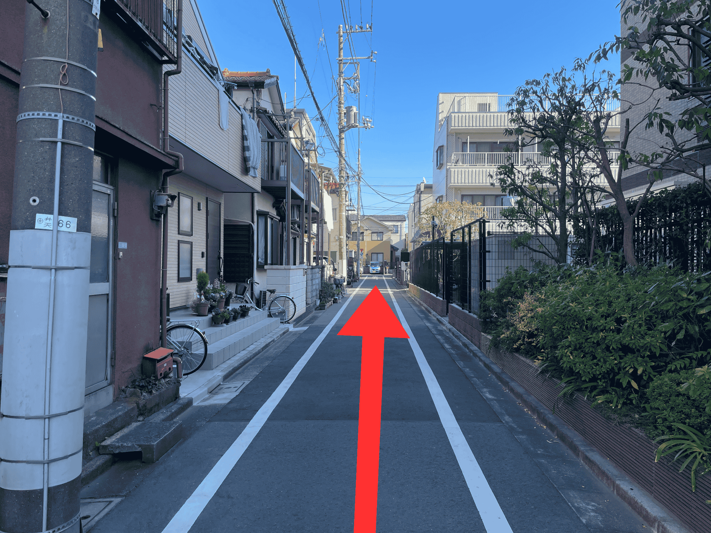
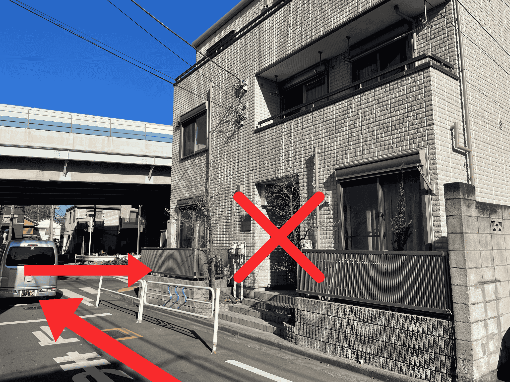
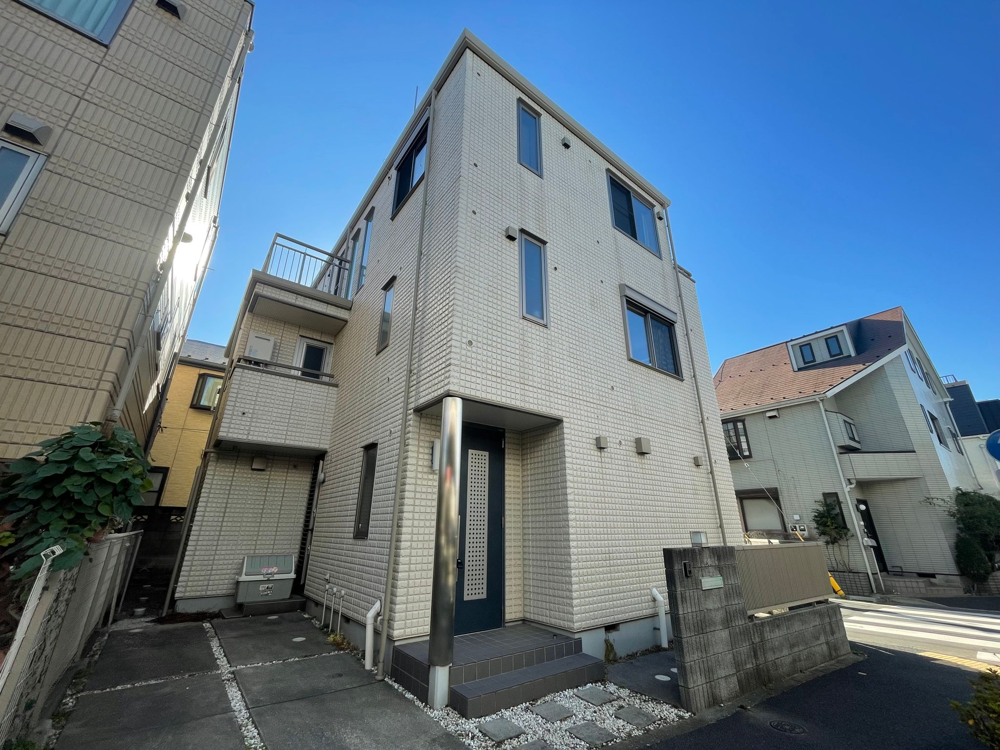
The keybox is located on the entrance door.
鍵はキーボックスの中にございます。玄関のドアにキーボックスが付いています。
钥匙箱位于玄关门上。
키박스는 현관문에 설치되어 있습니다.
La boîte à clés se trouve sur la porte d’entrée.
La caja de llaves está en la puerta de entrada.
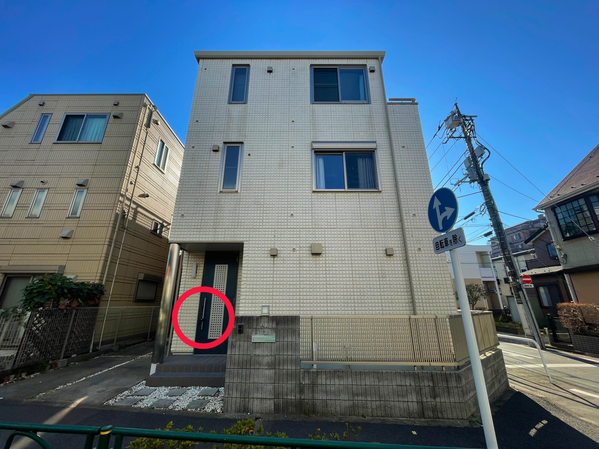
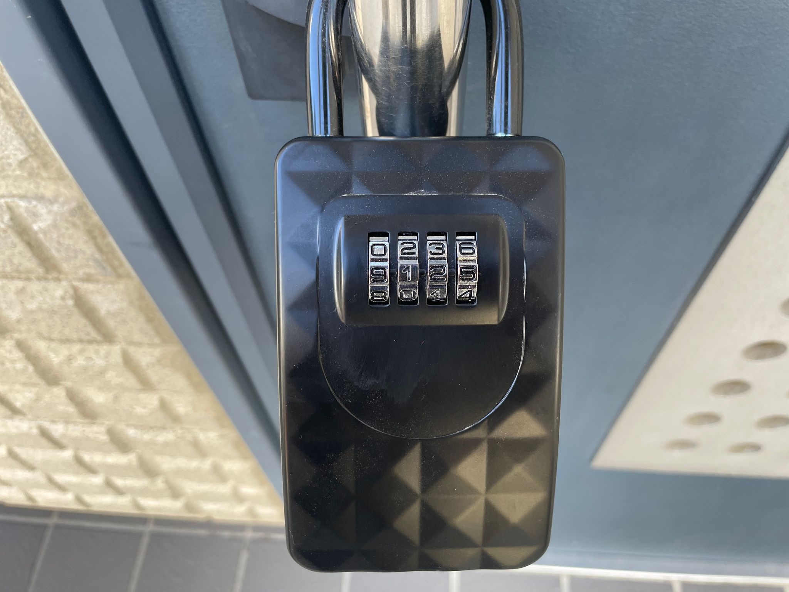